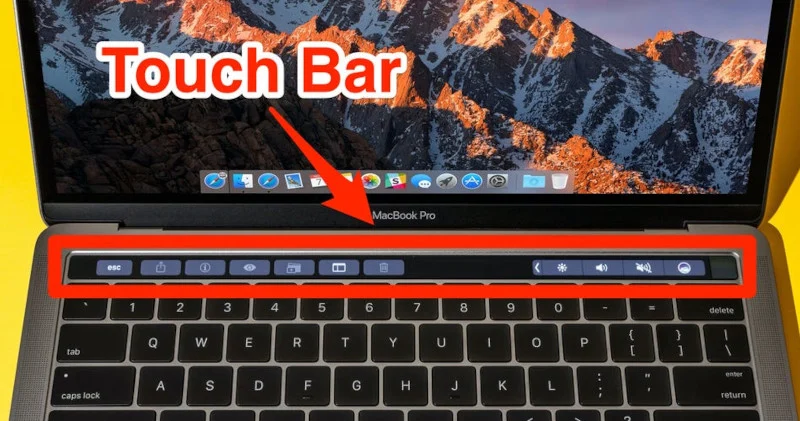

為什麼要買Mac
軟體與優點
首先，Mac的工作與學習效率我覺得真的很加分，你們可能會覺得都沒有差，那是因為你們要自己去實際測試才知道．接下來要講Macos軟體的分析，Macos有很多自動化我覺得很貼心，然後又有很多快捷鍵，值得購買

要買Air還是Pro
我相信你們已經要買了，但又會有人問要買Pro或Air?
我現在用的是pro，要看你們的需求去做決定，因為他們會由Air的硬體或Pro的硬體有所改變，若你們是有剪輯需求的話，想都別想，直接選Pro了，因為Pro有風扇，也些人選Air結果過熱cpu就燒掉了．但如果你只是工作、做作業、上網、追劇、看影片，那其實Air就很滿足你的需求了．接下來就是看你有沒有要Touchbar了，那其實沒有很重要（對我來說）所以買那個應該也是擺美而已了。Pro有Touchbar，Ａir沒有

結論
我相信你們聽完我的解說，你們也知道該選哪台了，希望你們喜歡我的推薦，掰掰
文章完畢